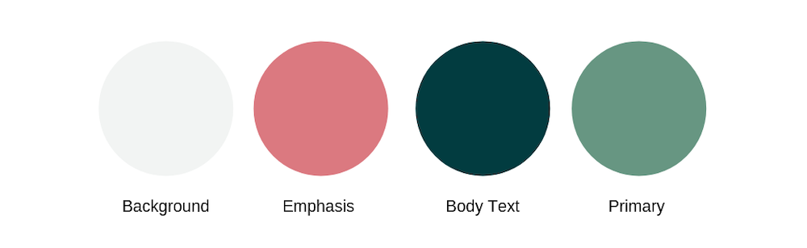
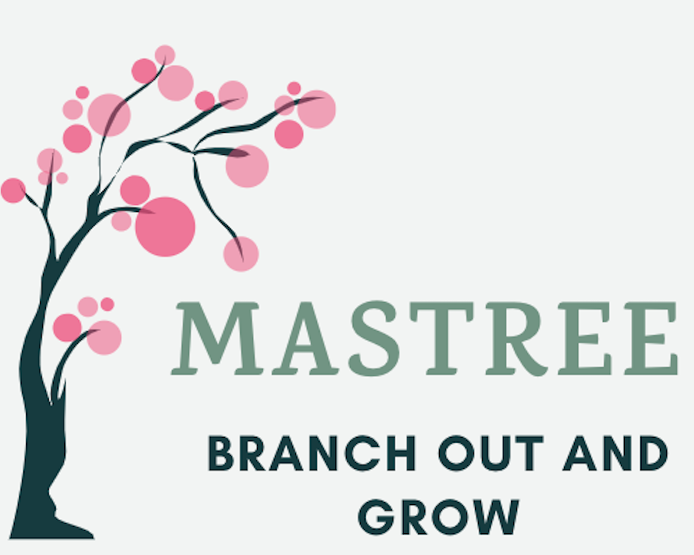

Team: Anjali Devakumar, Edwood Brice, Nila Sadeeshkumar, Ryan Mahan, and Jeff Reardon
Overview
Mastree is an online education platform with a the mission to help people learn foundational life skills and basic technical knowledge that are needed in today's increasingly technology-based world. With our simplistic UI, organized and targeted content, and goal-based learning system, we aim to even out the playing field with technology access and make it less frustrating to keep up with learning skills.
I primarily served as the design lead on the project, creating our brochure, logo, branding materials, and designing our website. However, I contributed in every step of the startup process, such as devising our revenue model and business plans and presenting in our pitch to investors.
Target Audience
Although this platform can be accessed by anyone who wants to improve their skills, we aim to target older individuals (35-65 yrs) who have not grown up with technology or face barriers with learning technology. Our platform caters to adults who need to learn a new technology for their current job, wish to improve upon their current technological abilities, or cannot afford/are dissatisfied with competing online or local learning resources. Additionally, we cater to students who do not have adequate access to education in technology at their school.
Highlighted Features
The team focused on three goals for our website:
1. Creating a simplistic UI - Our website has large buttons, easily understood messages and action choices, and the learning content is front and center.
2. Organized Content - In a user survey, we asked individuals within our target audience age range about topics they wanted to learn about and we identified the following domains:
Finance
Jobs/Branding
Technology
Health and Wellness
Political
We aimed to not dilute our content so users can easily find relevant content. We incorporated breadcrumb navigation to ensure people know where they are within the site and can easily search for topics.
3. Mastery-based learning: Rather than assigning letter grades or just checking for completion, we chose to incorporate quizzes and checkpoints that would check for understanding throughout the course. This allows for users to complete the course at a pace appropriate for them and ensure they retain the material better.
Branding
The color scheme I chose for the learning platform was meant to convey feelings of peacefulness, simplicity, and natural growth. As our platform intends to be a place where users can grow their skills, we chose a calming green to represent this idea. The other colors were chosen because they compliment the green nicely.


Logo
I chose a tree to represent the idea of growth and nurturing skills. Our tagline, Branch Out and Grow, emphasizes the fact that this education platform enables users to learn at their own pace gradually. A tree grows slowly and gradually from a small seed but eventually transforms into something magnificent and large. We used our logo to visually represent that idea and drive the purpose of our platform. The tree's colors also incorporate the same color scheme.
To learn more about Mastree's progress, please check out our marketing brochure and final pitch deck used for our startup pitch.